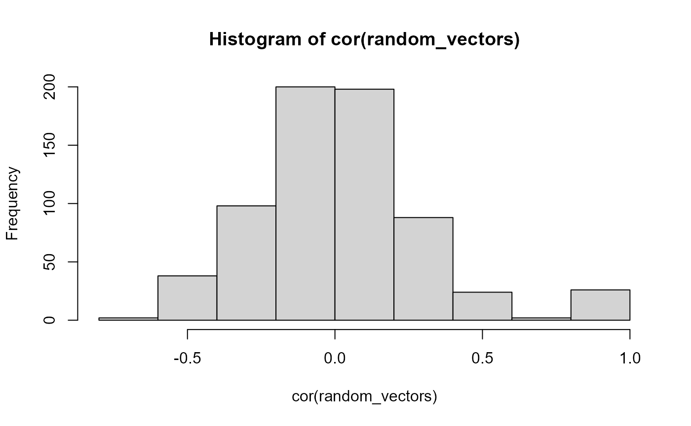

Lab3.Rmd
# Today's lab will pertain to multiple regression, orthogonal and non-orthogonal.
#NOTE: Because I'm not quite brilliant enough to creatively think of tutorial tips 100% on my own, I had to consult some online discourse. The links to these web-pages are provided below. Matt- please let me know if this was an acceptable choice.
#When conducting multiple regression analyses, it is crucial that all predictor variables are
#orthogonal. The "geometric" basis for this concept may obfuscate the straightforwardness of
#this concept: each predictor should be independent from one another, avoid predicting changes
#in other predictor variables, and should hold an independent predictive "influence" over the
#dependent variables. In other words- if any predictor varies alongside another, their shared
#influence over the DV would confound one another. For example, if "height" and "age" were both
#assessed as predictive variables for the DV "joint health," the principle of orthogonality would
#be inherently violated since height and age could both be reasonably hypothesized as holding a
#relationship with joint health- and because height would also be expected to covary with age.
#Any unique influence of height on joint health, for example, might accidentally be confounded
#by the non-orthogonal influence of age on height and consequently joint health as well.
#Taken at face value, checking for orthogonality between two variables is extremely simple.
#Because non-orthogonal predictor variables would co-vary with one another, it is reasonable
#to deduce that they should correlate with one another as well. Let's flesh out this age/height/
#joint-health example with some fake data assuming 18 subjects (and some arbitrary "joint health" metric):
library(tibble)
# Warning: package 'tibble' was built under R version 4.1.3
age <- c(8, 10, 11, 13, 14, 16, 19, 21, 23, 26, 29, 32, 41, 48, 52, 59, 66, 74)
height <- c(4.5, 4.8, 4.7, 5.3, 5.5, 6, 5.9, 6.2, 5.5, 6.3, 5.6, 5.8, 5.6, 6.2, 4.9, 5.7, 6.1, 5.9)
joint_health_index <- c(7, 8, 9, 8, 6, 5, 7, 6, 8, 3, 8, 6, 8, 5, 2, 2, 3, 2)
joint_health_data <- tibble(Age = age,
Height = height,
JHI = joint_health_index)
#We can effectively check for orthogonality by assessing whether age and height are correlated with one another, using a simple cor expression.
cor(joint_health_data)
# Age Height JHI
# Age 1.0000000 0.4052203 -0.7520185
# Height 0.4052203 1.0000000 -0.4203486
# JHI -0.7520185 -0.4203486 1.0000000
#It is apparent from this correlation matrix that age and height have a correlation of 0.40. Now what about the R^2 values?
cor(joint_health_data)^2
# Age Height JHI
# Age 1.0000000 0.1642035 0.5655318
# Height 0.1642035 1.0000000 0.1766930
# JHI 0.5655318 0.1766930 1.0000000
#Thus, 16.4% of variation in either the age or height variables can explain variation in height or age, respectively. They are therefore liable to confound one another in regression analyses for their ability to predict variance in joint health.
#There are methods to correct for non-orthogonality such as this, however that is not the focus of the present tutorial. Instead, it is my desire to point out that manually checking correlation matrices is a relatively indirect and (debatably) inefficient way to probe for orthogonality in one's data-set. Let's talk about one other method to check orthogonality. We must install and load the "ibd" package, and our data must be in matrix format if it is not already. We can then use the "check.orthogonality" function.
data <- as.matrix(joint_health_data)
install.packages("ibd", repos = "http://cran.us.r-project.org")
# Installing package into 'C:/Users/m3gad/AppData/Local/Temp/Rtmpg39MT7/temp_libpath5d4c292f7abb'
# (as 'lib' is unspecified)
# package 'ibd' successfully unpacked and MD5 sums checked
#
# The downloaded binary packages are in
# C:\Users\m3gad\AppData\Local\Temp\RtmpkZm6wk\downloaded_packages
library(ibd)
# Warning: package 'ibd' was built under R version 4.1.3
check.orthogonality(data)
# [1] 0
#This function is very simple. If the function returns a "1," the rows are orthogonal. If it returns "0," they are not. The limitation to this function is that it only checks whether ROWS are PAIRWISE orthogonal or not. The result returned of "0" reaffirms our earlier checking of correlation matrices, which also indicated that the variables are not orthogonal.
#Matt: I honestly worry that I either misunderstood this function, or that my data is not in the correct format for row-based pairwise orthogonality testing. I admit that I'm only just scratching the surface with this, but I hope this "tutorial" sets out what it was meant to do.
#WEBPAGES REFERENCED FOR THIS DOCUMENTATION:
# https://www.rdocumentation.org/packages/ibd/versions/1.5/topics/check.orthogonality
# https://rdrr.io/cran/ibd/man/check.orthogonality.html
#Explaining variance using multiple variables
random_vectors <- matrix(rnorm(20*26, 0, 1), nrow = 20, ncol = 26)
colnames(random_vectors) <- letters
random_vectors <- as.data.frame(random_vectors)
hist(cor(random_vectors))
summary(lm(a~b, data = random_vectors))
#
# Call:
# lm(formula = a ~ b, data = random_vectors)
#
# Residuals:
# Min 1Q Median 3Q Max
# -1.80713 -0.70672 -0.00656 0.80935 1.64607
#
# Coefficients:
# Estimate Std. Error t value Pr(>|t|)
# (Intercept) 0.2074 0.2295 0.904 0.378
# b -0.1216 0.2471 -0.492 0.629
#
# Residual standard error: 1.018 on 18 degrees of freedom
# Multiple R-squared: 0.01327, Adjusted R-squared: -0.04155
# F-statistic: 0.2421 on 1 and 18 DF, p-value: 0.6286
summary(lm(a~b,data=random_vectors))$r.squared
# [1] 0.01327268
summary(lm(a~b,data=random_vectors))$r.squared
# [1] 0.01327268
summary(lm(a~b+c,data=random_vectors))$r.squared
# [1] 0.01714392
summary(lm(a~b+c+d,data=random_vectors))$r.squared
# [1] 0.1578308
summary(lm(a~b+c+d+e,data=random_vectors))$r.squared
# [1] 0.3090475
summary(lm(a~b+c+d+e+f,data=random_vectors))$r.squared
# [1] 0.4334414
summary(lm(a~b+c+d+e+f+g,data=random_vectors))$r.squared
# [1] 0.4371287
summary(lm(a~b+c+d+e+f+g+h,data=random_vectors))$r.squared
# [1] 0.6946921
summary(lm(a~b*c,data=random_vectors))$r.squared
# [1] 0.1582425
summary(lm(a~b*c*d,data=random_vectors))$r.squared
# [1] 0.4052551
summary(lm(a~b*c*d*e,data=random_vectors))$r.squared
# [1] 0.8795055
summary(lm(a~b*c*d*e*f,data=random_vectors))$r.squared
# [1] 1
summary(lm(a~b*c*d*e, data = random_vectors))
#
# Call:
# lm(formula = a ~ b * c * d * e, data = random_vectors)
#
# Residuals:
# 1 2 3 4 5 6 7 8
# 0.18638 -0.04916 -0.50200 -0.87021 -0.19854 0.25771 -0.08564 -0.15754
# 9 10 11 12 13 14 15 16
# 0.06955 0.22378 -0.32787 0.02737 -0.17250 0.02537 0.46728 0.04770
# 17 18 19 20
# 0.73561 0.04549 -0.08397 0.36121
#
# Coefficients:
# Estimate Std. Error t value Pr(>|t|)
# (Intercept) 1.9050 0.6312 3.018 0.0392 *
# b -0.4111 0.8396 -0.490 0.6500
# c 2.5370 1.2470 2.034 0.1116
# d -1.1988 1.0924 -1.097 0.3341
# e 2.1477 0.9371 2.292 0.0837 .
# b:c -5.1078 2.0454 -2.497 0.0670 .
# b:d 1.3024 0.6602 1.973 0.1198
# c:d -6.7314 3.1155 -2.161 0.0968 .
# b:e -0.7312 2.0001 -0.366 0.7332
# c:e 2.2696 1.7144 1.324 0.2562
# d:e -2.8337 1.7157 -1.652 0.1740
# b:c:d 3.1755 2.6955 1.178 0.3041
# b:c:e -6.2315 3.4290 -1.817 0.1433
# b:d:e 1.6807 1.4376 1.169 0.3073
# c:d:e -8.5954 3.0178 -2.848 0.0465 *
# b:c:d:e 2.5768 5.0176 0.514 0.6346
# ---
# Signif. codes: 0 '***' 0.001 '**' 0.01 '*' 0.05 '.' 0.1 ' ' 1
#
# Residual standard error: 0.7549 on 4 degrees of freedom
# Multiple R-squared: 0.8795, Adjusted R-squared: 0.4277
# F-statistic: 1.946 on 15 and 4 DF, p-value: 0.2732
summary(lm(a~b*c*d*e*f, data = random_vectors))
#
# Call:
# lm(formula = a ~ b * c * d * e * f, data = random_vectors)
#
# Residuals:
# ALL 20 residuals are 0: no residual degrees of freedom!
#
# Coefficients: (12 not defined because of singularities)
# Estimate Std. Error t value Pr(>|t|)
# (Intercept) 6.1076 NaN NaN NaN
# b 20.6918 NaN NaN NaN
# c 10.3614 NaN NaN NaN
# d 13.5567 NaN NaN NaN
# e 6.0020 NaN NaN NaN
# f 8.7771 NaN NaN NaN
# b:c -38.0494 NaN NaN NaN
# b:d 9.5408 NaN NaN NaN
# c:d -52.4767 NaN NaN NaN
# b:e 6.8853 NaN NaN NaN
# c:e 0.4095 NaN NaN NaN
# d:e 12.5837 NaN NaN NaN
# b:f 17.6429 NaN NaN NaN
# c:f -12.1208 NaN NaN NaN
# d:f 8.1224 NaN NaN NaN
# e:f -1.6585 NaN NaN NaN
# b:c:d 27.0778 NaN NaN NaN
# b:c:e -51.5225 NaN NaN NaN
# b:d:e 18.3876 NaN NaN NaN
# c:d:e -47.6668 NaN NaN NaN
# b:c:f NA NA NA NA
# b:d:f NA NA NA NA
# c:d:f NA NA NA NA
# b:e:f NA NA NA NA
# c:e:f NA NA NA NA
# d:e:f NA NA NA NA
# b:c:d:e NA NA NA NA
# b:c:d:f NA NA NA NA
# b:c:e:f NA NA NA NA
# b:d:e:f NA NA NA NA
# c:d:e:f NA NA NA NA
# b:c:d:e:f NA NA NA NA
#
# Residual standard error: NaN on 0 degrees of freedom
# Multiple R-squared: 1, Adjusted R-squared: NaN
# F-statistic: NaN on 19 and 0 DF, p-value: NA
library(tibble)
slamecka_design <- tribble(
~Subjects, ~OL, ~IL,
1, 2, 0,
1, 4, 4,
1, 8, 8,
2, 4, 0,
2, 8, 4,
2, 2, 8,
3, 8, 0,
3, 2, 4,
3, 4, 8,
4, 2, 4,
4, 4, 0,
4, 8, 8,
5, 4, 4,
5, 2, 8,
5, 8, 0,
6, 8, 4,
6, 4, 8,
6, 2, 0,
7, 2, 8,
7, 4, 0,
7, 8, 4,
8, 4, 8,
8, 2, 4,
8, 8, 0,
9, 8, 8,
9, 4, 4,
9, 2, 0
)
cor(slamecka_design)
# Subjects OL IL
# Subjects 1 0 0
# OL 0 1 0
# IL 0 0 1
slamecka_confounded <- tribble(
~Subjects, ~OL, ~IL,
1, 2, 0,
1, 4, 4,
1, 8, 8,
2, 4, 4,
2, 8, 8,
2, 2, 0,
3, 8, 8,
3, 2, 0,
3, 4, 4,
4, 2, 0,
4, 4, 4,
4, 8, 8,
5, 4, 4,
5, 2, 0,
5, 8, 8,
6, 8, 8,
6, 4, 4,
6, 2, 0,
7, 2, 0,
7, 4, 4,
7, 8, 8,
8, 4, 4,
8, 2, 0,
8, 8, 8,
9, 8, 8,
9, 4, 4,
9, 2, 0
)
cor(slamecka_confounded)
# Subjects OL IL
# Subjects 1 0.0000000 0.0000000
# OL 0 1.0000000 0.9819805
# IL 0 0.9819805 1.0000000
library(dplyr)
# Warning: package 'dplyr' was built under R version 4.1.3
#
# Attaching package: 'dplyr'
# The following objects are masked from 'package:stats':
#
# filter, lag
# The following objects are masked from 'package:base':
#
# intersect, setdiff, setequal, union
library(ggplot2)
# Warning: package 'ggplot2' was built under R version 4.1.3#Hulme et al (1984) example
data <- tibble(X = c(4, 4, 7, 7, 10, 10),
T = c(1, 2, 2, 4, 3, 6),
Y = c(14, 23, 30, 50, 39, 67))
(overall_model <- summary(lm(Y~X+T, data = data)))
#
# Call:
# lm(formula = Y ~ X + T, data = data)
#
# Residuals:
# 1 2 3 4 5 6
# -1.167 -1.667 2.333 3.333 -1.167 -1.667
#
# Coefficients:
# Estimate Std. Error t value Pr(>|t|)
# (Intercept) 1.667 3.598 0.463 0.67470
# X 1.000 0.725 1.379 0.26162
# T 9.500 1.087 8.736 0.00316 **
# ---
# Signif. codes: 0 '***' 0.001 '**' 0.01 '*' 0.05 '.' 0.1 ' ' 1
#
# Residual standard error: 2.877 on 3 degrees of freedom
# Multiple R-squared: 0.9866, Adjusted R-squared: 0.9776
# F-statistic: 110.1 on 2 and 3 DF, p-value: 0.001559
cor(data)
# X T Y
# X 1.0000000 0.7500000 0.8027961
# T 0.7500000 1.0000000 0.9889517
# Y 0.8027961 0.9889517 1.0000000
cor(data)^2
# X T Y
# X 1.0000000 0.5625000 0.6444815
# T 0.5625000 1.0000000 0.9780254
# Y 0.6444815 0.9780254 1.0000000
lm.x <- lm(Y~X, data = data)
data <- data %>%
mutate(X_residuals = residuals(lm.x),
X_predicted_Y = predict(lm.x))
knitr::kable(data)| X | T | Y | X_residuals | X_predicted_Y |
|---|---|---|---|---|
| 4 | 1 | 14 | -5.916667 | 19.91667 |
| 4 | 2 | 23 | 3.083333 | 19.91667 |
| 7 | 2 | 30 | -7.166667 | 37.16667 |
| 7 | 4 | 50 | 12.833333 | 37.16667 |
| 10 | 3 | 39 | -15.416667 | 54.41667 |
| 10 | 6 | 67 | 12.583333 | 54.41667 |
A <- ggplot(data, aes(y=Y, x=X))+
geom_point()+
geom_smooth(method="lm", se=FALSE)
B <- ggplot(data, aes(y=X_predicted_Y, x=X))+
geom_point()+
geom_smooth(method="lm",se=FALSE)
C <- ggplot(data, aes(y=X_residuals, x=X))+
geom_point()+
geom_smooth(method="lm",se=FALSE)
install.packages("patchwork", repos = "http://cran.us.r-project.org")
# Installing package into 'C:/Users/m3gad/AppData/Local/Temp/Rtmpg39MT7/temp_libpath5d4c292f7abb'
# (as 'lib' is unspecified)
# package 'patchwork' successfully unpacked and MD5 sums checked
#
# The downloaded binary packages are in
# C:\Users\m3gad\AppData\Local\Temp\RtmpkZm6wk\downloaded_packages
library(patchwork)
# Warning: package 'patchwork' was built under R version 4.1.3
A+B+C
# `geom_smooth()` using formula 'y ~ x'
# `geom_smooth()` using formula 'y ~ x'
# `geom_smooth()` using formula 'y ~ x'
lm.t <- lm(Y~T, data=data)
data <- data %>%
mutate(T_residuals = residuals(lm.t),
T_predicted_Y = predict(lm.t))
D <- ggplot(data, aes(y=Y, x=T))+
geom_point()+
geom_smooth(method="lm", se=FALSE)
E <- ggplot(data, aes(y=T_predicted_Y, x=T))+
geom_point()+
geom_smooth(method="lm",se=FALSE)
F <- ggplot(data, aes(y=T_residuals, x=T))+
geom_point()+
geom_smooth(method="lm",se=FALSE)
D+E+F
# `geom_smooth()` using formula 'y ~ x'
# `geom_smooth()` using formula 'y ~ x'
# `geom_smooth()` using formula 'y ~ x'
lm.xt <- lm(X~T, data = data)
residuals(lm.xt)
# 1 2 3 4 5 6
# -0.750 -1.875 1.125 -1.125 3.000 -0.375
cor(residuals(lm.xt), data$Y)^2
# [1] 0.008528111
lm.tx <- lm(T~X, data = data)
residuals(lm.tx)
# 1 2 3 4 5 6
# -0.5 0.5 -1.0 1.0 -1.5 1.5
cor(residuals(lm.tx), data$Y)^2
# [1] 0.342072
overall_model$r.squared - cor(residuals(lm.xt), data$Y)^2 - cor(residuals(lm.tx), data$Y)^2
# [1] 0.6359534
library(ppcor)
# Loading required package: MASS
#
# Attaching package: 'MASS'
# The following object is masked from 'package:patchwork':
#
# area
# The following object is masked from 'package:dplyr':
#
# select
data <- tibble(X = c(4, 4, 7, 7, 10, 10),
T = c(1, 2, 2, 4, 3, 6),
Y = c(14, 23, 30, 50, 39, 67))
spcor(data, method = "pearson")
# $estimate
# X T Y
# X 1.00000000 -0.2963241 0.4120552
# T -0.07367089 1.0000000 0.6488088
# Y 0.09234777 0.5848692 1.0000000
#
# $p.value
# X T Y
# X 0.0000000 0.6283051 0.4906046
# T 0.9062842 0.0000000 0.2362282
# Y 0.8825865 0.3002769 0.0000000
#
# $statistic
# X T Y
# X 0.0000000 -0.5373837 0.7832889
# T -0.1279494 0.0000000 1.4767956
# Y 0.1606375 1.2489073 0.0000000
#
# $n
# [1] 6
#
# $gp
# [1] 1
#
# $method
# [1] "pearson"
spcor(data, method = "pearson")$estimate^2
# X T Y
# X 1.000000000 0.08780798 0.1697895
# T 0.005427400 1.00000000 0.4209528
# Y 0.008528111 0.34207202 1.0000000
library(DBSStats2SemesterProject)